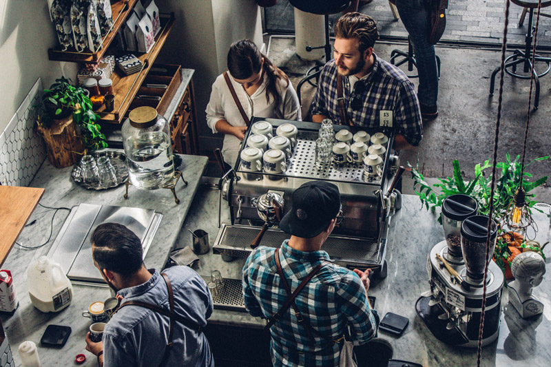
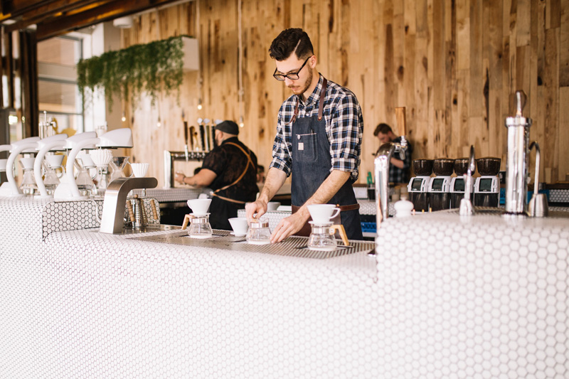

About us
Conscious Coffee is a brand who focus on growing, burning, and selling organic coffee. We opened up our first café in Imaginary Road 2CS in 2018.
Read moreLocations
Coffe on the go? Check out all our locations!
 Read moreStay in touch
Anything on your mind? Swing by for a cup of coffee, or leave us a message.
 Read more